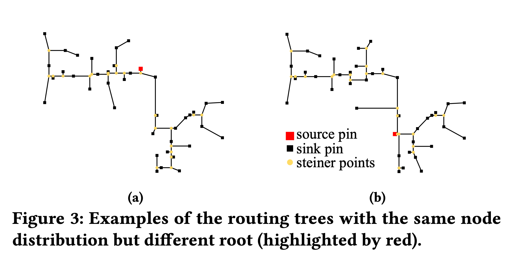
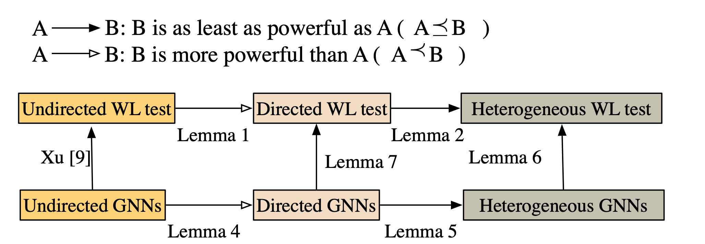
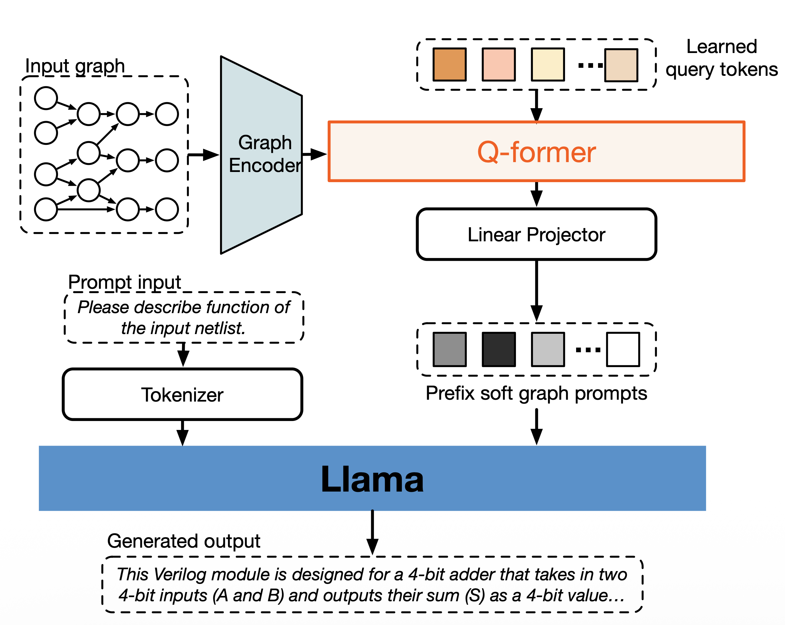
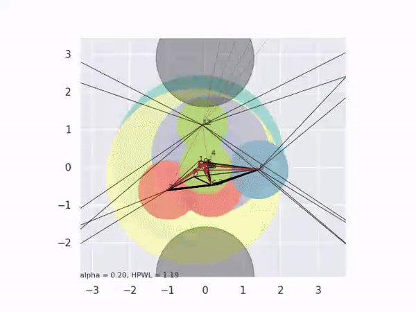
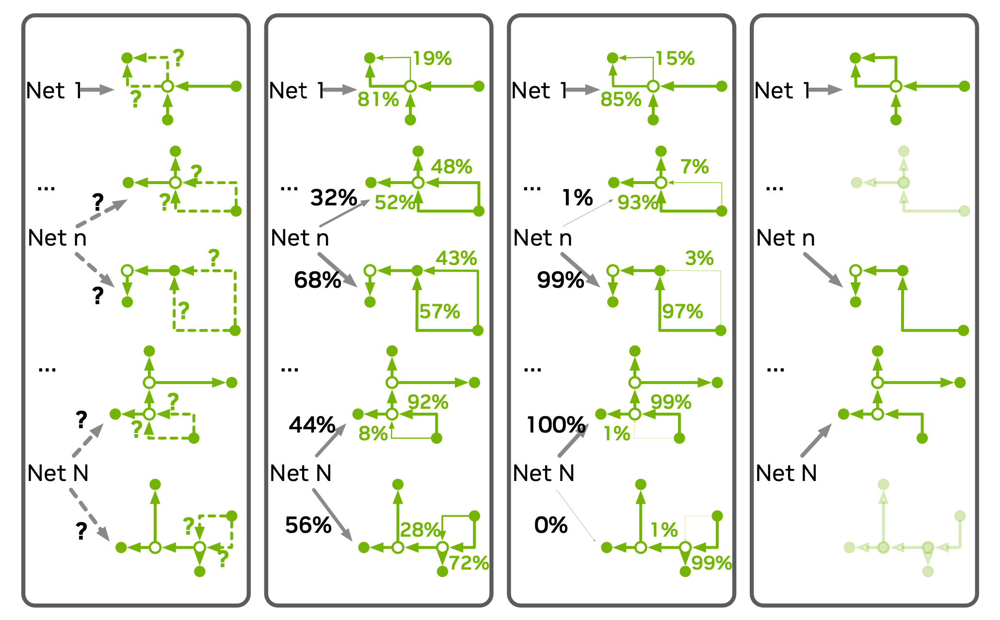
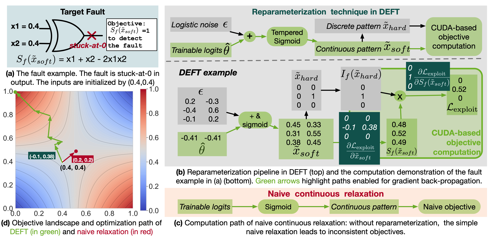
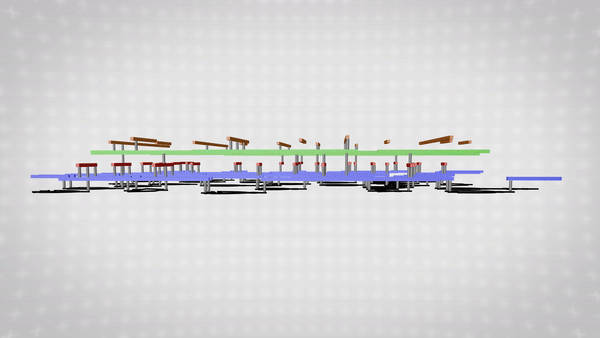

Research Summary
My research is dedicated to realizing Autonomous EDA, which relies on three pillars:
Multi-modal Perception (The Brain & Eyes):
The strategic agent must comprehend complex, multi-modal design contexts—bridging symbolic RTL semantics with spatial netlist topologies.
Analytical and Differentiable Optimization (The Hands):
The tools invoked by the agent must ensure superior PPA for billion-transistor circuits through scalable, differentiable optimization and analytical solvers.
Grounding (The Foundation):
To ensure manufacturability, autonomous designs must be grounded in physical reality via layout-aware testing and silicon-to-model feedback.
Thrust 1: Multi-Modal Perception for EDA (The “Eyes”)
Autonomous EDA begins with perception, the capability for AI to understand the design context. However,
design context presents unique challenges to standard AI models due to its complex, highly structured, and
multi-modal nature. My research asks: How can we enable AI to perceive the complex, multi-modal nature
of integrated circuits?
1.1 Multi-Modal Representations in EDA tasks
|

|
Related Publication(s)
Wei Li, Jialu Xia, Yuzhe Ma, Jialu Li, Yibo Lin, Bei Yu,
“Adaptive Layout Decomposition with Graph Embedding Neural Networks”,
ACM/IEEE Design Automation Conference (DAC), San Francisco, July 19-23, 2020.
(preprint).
Wei Li, Yuxiao Qu, Gengjie Chen, Yuzhe Ma, Bei Yu,
“TreeNet: Deep Point Cloud Embedding for Routing Tree Construction”,
IEEE/ACM Asian and South Pacific Design Automation Conference (ASP-DAC), 2021
(Best Paper Award).
(preprint).
Highlight(s)
Designed Graph Neural Networks specifically for layout decomposition and routing tree construction.
Formalized point cloud properties for EDA routing with theoretical proofs.
|
1.2 Theoretical Limits of Graph Learning
|

|
Related Publication(s)
Wei Li, Ruben Purdy, Jose Moura, Shawn Blanton,
“Characterize the ability of GNNs in attacking logic locking”,
ACM/IEEE Workshop on Machine Learning for CAD (MLCAD), 2023.
(preprint).
Wei Li, Ruxuan Li, Yuzhe Ma, Siu On Chan, David Pan, Bei Yu, et al. “Rethinking Graph Neural Networks for the Graph Coloring Problem.” (arXiv, appendix)
Highlight(s)
Proved that GNNs are upper bounded by the heterogeneous Weisfeiler-Lehman test in netlist isomorphism.
Explored the theoretical boundaries of graph learning in solving combinatorial optimization.
|
1.3 Multi-modal Large Language Models
|

|
Related Project(s)
Wei Li, Yang Zou, Christopher Ellis, Ruben Purdy, Shawn Blanton and José Moura, “BRIDGE: Bridging Graph and Large Language Models in EDA”, IEEE International Conference on LLM-Aided Design (ICLAD), 2025. (Best Paper Honorable Mention Award, 1/94).
Highlight(s)
Integrating textual reasoning of LLMs with structural inductive biases of GNNs.
A unified perception framework for heterogeneous EDA data.
|
Thrust 2: Analytical and Differentiable Optimization (The “Hands”)
Most EDA tasks are combinatorial optimization problems plagued by discrete constraints (e.g., binary digits).
My approach maps discrete problems into continuous landscapes, and the global gradients can guide the
optimization out of local minima.
2.1 Analytical Optimizations
|

|
Related Publication(s)
Wei Li, et al. “OpenMPL: An Open Source Layout Decomposer”,
IEEE Transactions on Computer-Aided Design of Integrated Circuits and Systems (TCAD).
(code).
Wei Li, Fangzhou Wang, Jose Moura, Shawn Blanton,
“Global floorplanning via semidefinite programming”,
ACM/IEEE Design Automation Conference (DAC), 2023.
Highlight(s)
OpenMPL: A comprehensive open-source framework for layout decomposition.
SDP Floorplanning: A novel Semidefinite Programming approach for module placement.
|
2.2 Differentiable Programming
Differentiable Global Routing
|

|
Related Publication(s)
Wei Li, et al. “DGR: Differentiable Global Routing”,
ACM/IEEE Design Automation Conference (DAC), San Francisco, 2024.
Highlight(s)
Developed a differentiable global router for concurrent optimization of millions of nets.
|
Differentiable Automatic Test Pattern Generation
|

|
Related Publication(s)
Wei Li, Yang Zou, Yixin Liang, Shawn Blanton and José Moura, “DEFT: Differentiable Automatic Test Pattern Generation”, arXiv.
Highlight(s)
Reformulated ATPG as a differentiable optimization with a new reparameterization
Custom CUDA kernel achieves 4×–26× speedup on industrial circuits
Improved HTD detection by 21%–49% under the same pattern budget
|
Thrust 3: Robustness Under Physical Uncertainty
A design is good only if grounded in reality. My research philosophy is that robustness must be verified not
just in abstract models, but under the stochastic uncertainty of the physical world.
|

|
Related Publication(s)
Wei Li, et al. “PEPR: Pseudo-Exhaustive Physical Region Testing”,
IEEE International Test Conference (ITC), 2022.
Chris Nigh, Wei Li, et al. “Faulty Function Extraction for Defective Circuits”,
IEEE European Test Symposium (ETS) 2024.
Highlight(s)
Addressed Silent Data Corruption (SDC) through cross-layer analysis.
Comprehensively analyze layout and netlist to identify sub-circuits for testing.
|
|